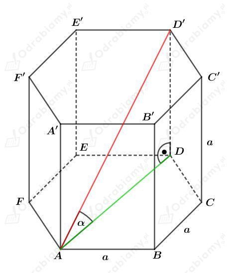
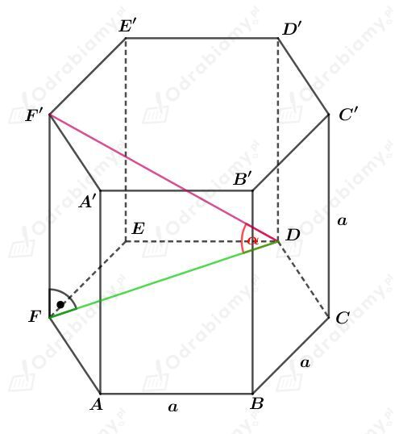
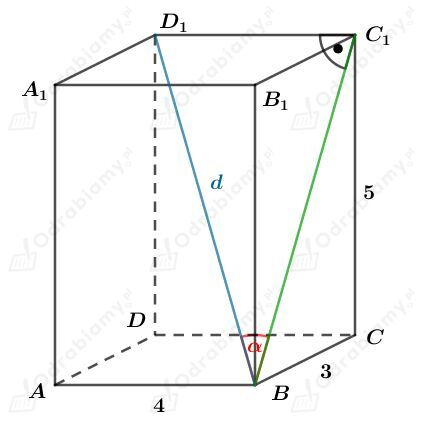
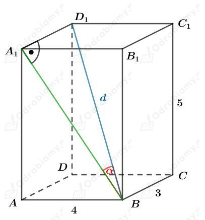
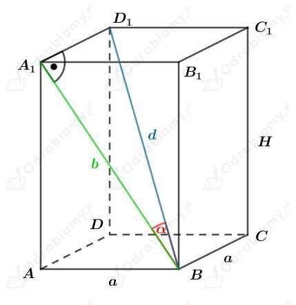
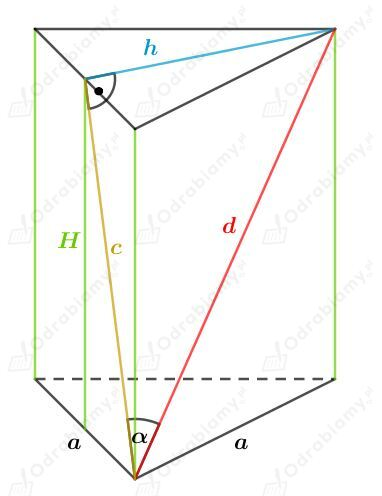

Kąt między dłuższą przekątną a podstawą

Korzystając z własności sześciokąta foremnego wiemy, że
Korzystając z funkcji tangens dla trójkąta prostokątnego ADD' mamy:
Odczytujemy z tabeli przybliżonych wartości funkcji trygonometrycznych mamy:
Kąt między krótszą przekątną a podstawą

Korzystając z własności sześciokąta foremnego wiemy, że
Korzystając z funkcji tangens dla trójkąta prostokątnego FDF' mamy:
Korzystając z tabeli wybranych wartości funkcji trygonometrycznych mamy:
Dany jest prostopadłościan o wymiarach 3 cm x 4 cm x 5 cm.
Wyznaczmy długość przekątnej tego prostopadłościanu. Mamy:
Kąt między przekątną graniastosłupa a ścianą o wymiarach 3 cm x 5 cm

Korzystając z funkcji sinus dla trójkąta prostokątnego BC1D1 mamy:
Kąt między przekątną graniastosłupa a ścianą o wymiarach 4 cm x 5 cm

Korzystając z funkcji sinus dla trójkąta prostokątnego BA1D1 mamy:
Rysunek:

Korzystając z funkcji tangens dla trójkąta prostokątnego BA1D1 mamy:
Korzystając z twierdzenia Pitagorasa dla trójkąta ABA1 mamy:
Obie strony równości muszą być dodatnie, zatem
więc
czyli ostatecznie mamy
Wyznaczmy objętość tego graniastosłupa. Mamy:
Rysunek:

Odcinek h jest wysokością trójkąta równobocznego, czyli
Wyznaczmy cosinus kąta 𝛼. Mamy:
Wyznaczmy sinus kąta 𝛼. Mamy:
Korzystając z twierdzenia Pitagorasa otrzymujemy:
Podstawiając otrzymane wcześniej wartości mamy:
Ponieważ obie strony równości
muszą być dodatnie, mamy:
czyli uzasadniliśmy, że